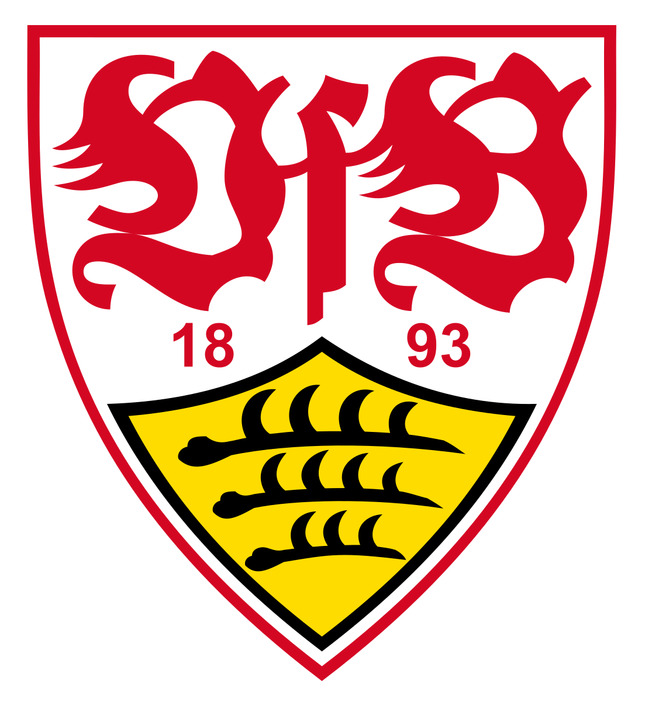
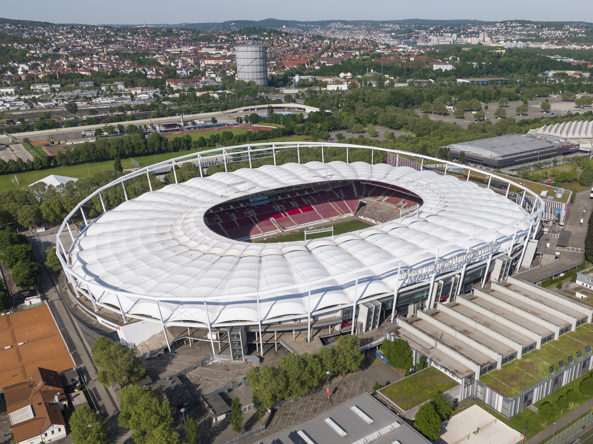

Treinador: Sebastian Hoeness
Sebastian Hoeness é o atual treinador do Stuttgart. O técnico alemão assumiu o comando da equipa em abril de 2023, destacando-se na Bundesliga pela sua abordagem tática moderna e capacidade de liderança, operando uma revolução que transformou o clube num candidato aos palcos europeus.
Estádio: MHPArena
A MHPArena é o estádio oficial do Stuttgart. Localizado em Estugarda, o histórico recinto destaca-se na Bundesliga pela sua enorme capacidade, pela mítica bancada Cannstatter Kurve e por ter sido uma das grandes sedes do Euro 2024.

Estilo de Jogo:
O estilo de jogo que Sebastian Hoeness utiliza no Stuttgart baseia-se num futebol de posse de bola dominante, posicional e altamente fluído. O seu modelo destaca-se por ser um dos mais entusiasmantes e ofensivos da Bundesliga.
"Furchtlos und treu!"